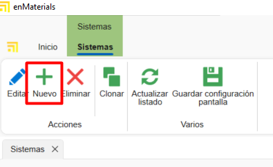
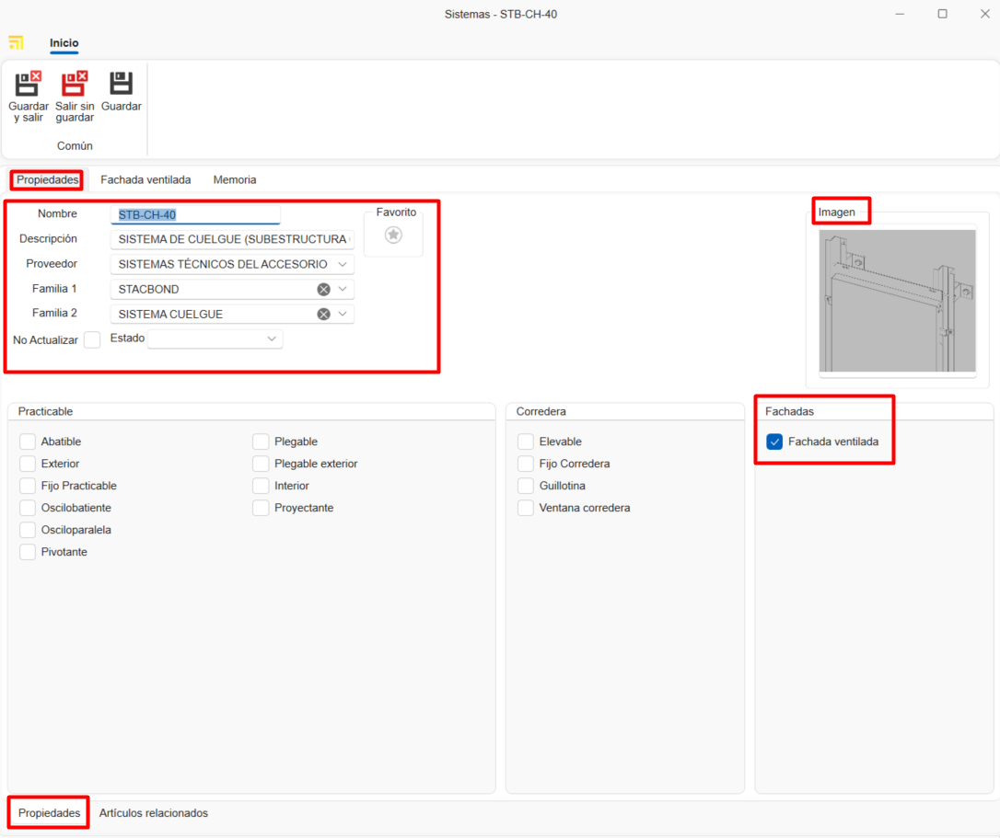

Criação de materiais próprios no enMATERIALS
1. Introdução
Este manual tem como objetivo guiar o usuário no processo de cadastro e gestão de materiais próprios no enMATERIALS. Certifique-se de seguir as instruções detalhadas para garantir a definição e organização corretas dos materiais.
2. Definição de materiais
Os materiais podem ser classificados em diferentes tipos de acordo com suas propriedades e características. A seguir, são descritos os principais tipos:
2.1. Tipos de materiais
- Peças: Calculadas por unidade, são os materiais mais comuns e simples de definir.
- Barras: Calculadas por metro linear e requerem informações adicionais, como comprimento.
- Superfícies: Calculadas por metro quadrado e podem incluir características adicionais.
- Juntas: Calculadas por metro linear e têm especificações especiais para sua aplicação.
2.2. Artigos e cores
Os materiais são definidos na seção "Artigos", enquanto os acabamentos são gerenciados em "Cores" e a matéria-prima em "Materiais".

3. Criação de materiais
Para cadastrar um material, siga os seguintes passos:
3.1. Definir um artigo
- Acesse a seção "Artigos".


- Na aba Geral, atribua uma referência, tipo de cálculo e material.

- Organize os artigos por níveis utilizando os campos "Familia1", "Familia2", etc.

- Complete a descrição de compra (para fornecedores) e de venda (para clientes).

- Atribua um material base arrastando um material da árvore de materiais na fita à direita.

- Adicione imagens ao material. Certifique-se de otimizar as imagens para evitar lentidão na base de dados.

-
Na seção Informações de Armazém indicar para esse artigo alguns campos como:
-
Armazém principal: Define o armazém onde o artigo será localizado por padrão no sistema.
- Localização: Especifica a localização física exata dentro do armazém (prateleira, corredor, nível, etc.).
- Montado no destino: Ao marcar esta caixa, o artigo será configurado para montagem no destino por padrão. Estes materiais aparecerão na estação de Picking do enCONTROL.
-
Controlo de stock: Ao ativar esta opção, o artigo será incluído na seção de reposição de stock para acompanhamento de inventário.

Nota: A aba "Geral" do artigo é igual para todos os tipos de cálculo.
3.2. Criação de cores
- Acesse a seção "Cores".


- Atribua uma referência, nome e uma cor ou textura.

- Atribua um fornecedor na aba "Fornecedor" arrastando o fornecedor da janela à direita.

3.3. Criação de um material Base
- Acesse a seção "Materiais".


- Indique o nome, cor e marque o check "Material" para que apareça como matéria-prima.

Nota: Para gerar automaticamente a carta RAL de cores e material base, selecione o botão Essenciais na barra "Início".


4. Gestão de fornecedores
Antes de cadastrar um material, verifique se o fornecedor já está registrado no ENBLAU na seção "Compras > Fornecedores". Caso não esteja, crie-o seguindo os padrões definidos.

5. Comercial e estoque
Após definir o material, complete suas informações nas seções de comercial e estoque.
5.1. Dados de compra e fornecedores
Atribua fornecedores, unidades e preços de compra para cada cor do material.

Nota: Você pode adicionar uma referência de fornecedor se for diferente da registrada na base de dados.
5.2. Atribuição de referências
Cada cor e material terá uma referência única (Referência do Artigo + Referência da Cor). Arraste uma ou mais cores da aba de cores na janela à direita.

6. Tipologia de materiais e dados adicionais
6.1. Peças
- Materiais individuais gerenciados por unidade (acessórios, parafusos, etc.).
- Avaliados por unidade.
- Na aba "Propriedades Comuns", você pode adicionar campos adicionais se necessário.

6.2. Barras
- Materiais definidos por comprimento e outros atributos técnicos.
- Avaliados por metro linear.
- Na aba "Propriedades Comuns", indique o comprimento da barra (obrigatório).

- Para perfis, adicione informações adicionais como distância de segurança e retalho mínimo/máximo. Esse tipo de informação é opcional.

Nota: Seções como Tipologia, Papel, Dados Técnicos, Descontos e Regras não são necessárias para a criação de materiais próprios, pois são informações relevantes apenas para materiais desenhados.
6.3. Superfícies
- Materiais definidos por metro quadrado (vidros, chapas, etc.).
- Avaliados por m².
- Na aba "Propriedades Comuns", indique altura e largura da superfície.

- Na aba "Valoração e dados técnicos", indique alguns dados dependendo do tipo de superfície e necessidade. Por exemplo: Espessura, tipo de superfície, preços por m² (marque o check "m² por fornecedor" se o preço for calculado por fornecedor), etc.

6.4. Juntas
- Materiais definidos por metro linear.
- Avaliados por metro linear.
- Na aba "Propriedades Comuns", você pode indicar o comprimento se achar necessário.

7. Padrões a seguir
Para garantir uma gestão correta, siga os seguintes padrões:
- Use letras maiúsculas em nomes e referências.
- Verifique a existência de fornecedores e materiais antes de cadastrá-los.
- Mantenha um formato uniforme nas referências de materiais e cores.
- Salve sempre as alterações.
8. Criação de documentos de compra ENBLAU
Para verificar se o artigo está cadastrado, abra o ENBLAU e crie um documento de compra:
- Crie um pedido de compra e selecione o fornecedor.
- No pedido de compra, busque e adicione o material da janela à direita. Arraste e selecione a cor associada.

- Valide o preço atribuído ao fornecedor.

- Se o material tiver mais de um fornecedor atribuído, você pode selecionar o fornecedor desejado com um duplo clique sobre ele.
9. Criação de sistemas e materiais enCLAD
Criação de sistemas e materiais para fachadas ventiladas no enCLAD.
9.1. Sistemas
A partir da janela inicial, na barra superior, aceder a Sistema.

- Para criar um novo sistema, selecionar Novo na barra superior.

9.1.2. Propriedades
A partir do separador Propriedades, localizado na parte inferior, definem-se os seguintes campos do sistema:
- Nome
- Descrição
- Fornecedor
- Família 1 e 2 (organização por níveis)
- Imagem
- Estado: Ativo, Desativado temporariamente ou Descontinuado.
- Tipologia do sistema
Neste caso, marcar a caixa Fachada ventilada.

A partir do separador Artigos relacionados, na parte inferior, é mostrada a lista de materiais vinculados ao sistema.

9.1.3. Fachada ventilada
A partir do separador Tipo de sistema, na parte superior, será mostrada uma janela onde se pode selecionar o tipo de sistema:
- Sistema de suspensão
- Sistema macho-fêmea
- Sistema colado
- Sistema rebitado
Na janela lateral esquerda definem-se os parâmetros específicos do tipo de sistema.
Na janela inferior definem-se outros parâmetros comuns entre os diferentes tipos de sistema, como:
- Distância extremo habitual
- Pegada mínima – Vertical
- Pegada máxima – Vertical
- Pegada habitual – Vertical
- Pegada mínima – Horizontal
- Pegada máxima – Horizontal
- Pegada habitual – Horizontal
- Moldura mínima
- Moldura máxima
- Moldura habitual
- Permitir moldura (caixa)
Na janela central é mostrado o design da fachada ventilada correspondente ao tipo de sistema selecionado.
Se o tipo de sistema for Sistema de suspensão, é habilitada uma janela adicional para a definição do design da maquinação:
- Separador Maquinação suspensão
Permite importar o desenho em formato.dwg/.dxf. - Separador Outras maquinações
Permite definir a maquinação através de parâmetros.
Na janela lateral direita, Materiais do sistema, adicionam-se os artigos correspondentes ao sistema através de campos suspensos:
- Calha
- Rebite conformado
- Suporte de suspensão
- Platina conformada
- Reforço de suporte

ℹ️ Nota: Dependendo do tipo de sistema selecionado, serão habilitados uns parâmetros ou outros.
A partir do separador Opções, na parte inferior, será mostrada uma janela com as opções de canto disponíveis dependendo do tipo de sistema.

A partir do separador Remates, na parte inferior, será mostrada uma janela onde definir:
Opções de remate: Definir as opções de remate para o sistema na implantação da opção.
- Coroamento
- Remate inferior
- Fecho de câmara
- Janela padieira
- Janela peitoril
- Janela ombreira
Valores: Definir os valores para cada opção selecionada.
Dobras: Definir o comprimento e rotação das dobras para cada valor selecionado.

A partir do separador Rigidificadores (disponível apenas para sistemas de tipo suspensão), é mostrada a lista de materiais de tipo rigidificador vinculados ao sistema.

9.1.4. Clonar sistemas
A partir de Sistemas, na fita superior, está disponível a opção Clonar.
Esta funcionalidade copia todas as propriedades do sistema selecionado na lista.


9.2. Definição de artigos enCLAD
Definir artigos a partir do módulo de artigos:
Criar um novo artigo:
1. Geral
Preencher os campos de informação geral conforme o tipo de cálculo selecionado:
- Barra
- Peça
- Junta
- Superfície

ℹ️ Nota: É obrigatório indicar o sistema de fachada ventilada ao qual o material estará vinculado.
2. Propriedades comuns
Preencher os campos de propriedades comuns.
Dependendo do tipo de cálculo do material, aparecerão uns campos ou outros.
Exemplos:
- Barra

- Peça separadora

3. Função
Marcar o tipo de função do perfil (apenas para artigos de tipo barra) e definir o seu valor na secção de fachada ventilada.

4. Dados técnicos
Importar o ficheiro .dwg/.dxf do material e definir as dimensões do desenho, como:
- Dimensões interiores
- Dimensões exteriores
- Profundidade
- Ponto de inserção
- Outros parâmetros

ℹ️ Nota: O separador Dados técnicos está disponível apenas para os tipos de cálculo barra e junta.
5. Regras
Atribuir uma regra ao perfil (apenas para barras), arrastando uma regra previamente definida da janela lateral direita inferior, do separador Regras.

6. Comercial e stock (atribuir cores)
Cada cor e material terá uma referência única (Referência Artigo + Referência Cor). Arrastar uma ou mais cores do separador de cores na janela direita, do separador Comercial e stock.
ℹ️ Nota: Informações sobre como criar novas cores ir para 3.2. Criação de cores.
9.3. Definição de regras
A partir da secção inicial, aceder à lista Regras de adição de artigos e selecionar Regras em perfis.

Criar uma Nova regra em perfis.
1. Propriedades
Preencher os campos de propriedades da regra:
- Nome
- Descrição
- Famílias (níveis de pastas)

2. Artigos relacionados
Relacionar os artigos de tipo barra arrastando-os da janela lateral direita em Artigos.

3. Sistemas restritivos
Indicar os sistemas a restringir para essa regra, arrastando-os da janela lateral direita em Sistemas.

4. Acessórios
Indicar a opção e/ou o artigo que será gerado, arrastando-o da janela lateral direita em Acessórios.

ℹ️ Nota: Pode-se definir uma configuração diferente para cada tipo de cálculo a partir do separador correspondente na parte inferior da janela.
10. Conclusão
Seguindo este manual, poderá registar e gerir materiais de forma eficiente no sistema, garantindo uma correta organização e otimização dos processos de compra e venda.
 Español
Español
 English
English
 Italiano
Italiano
 Português
Português